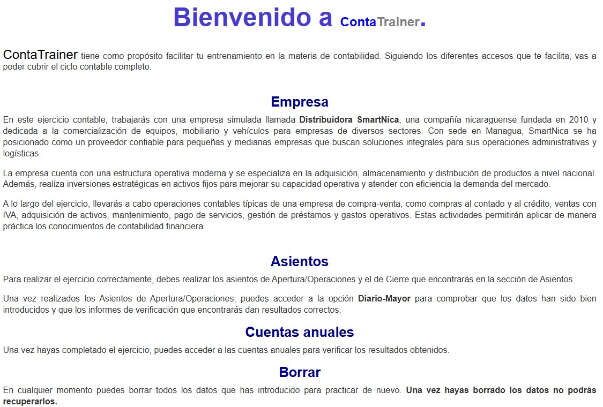
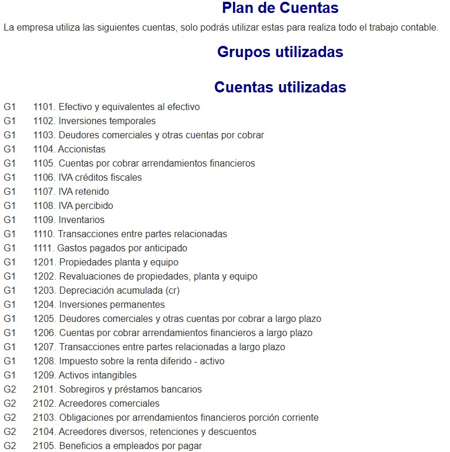
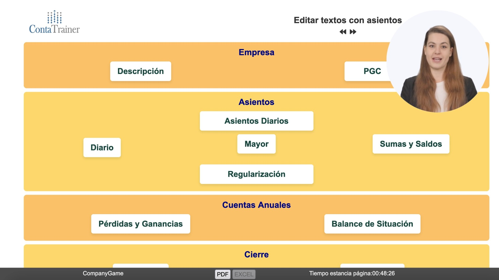
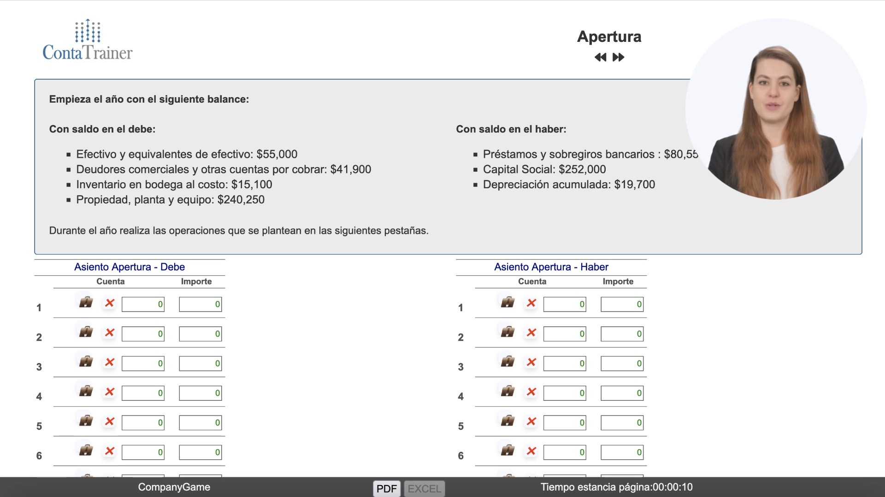
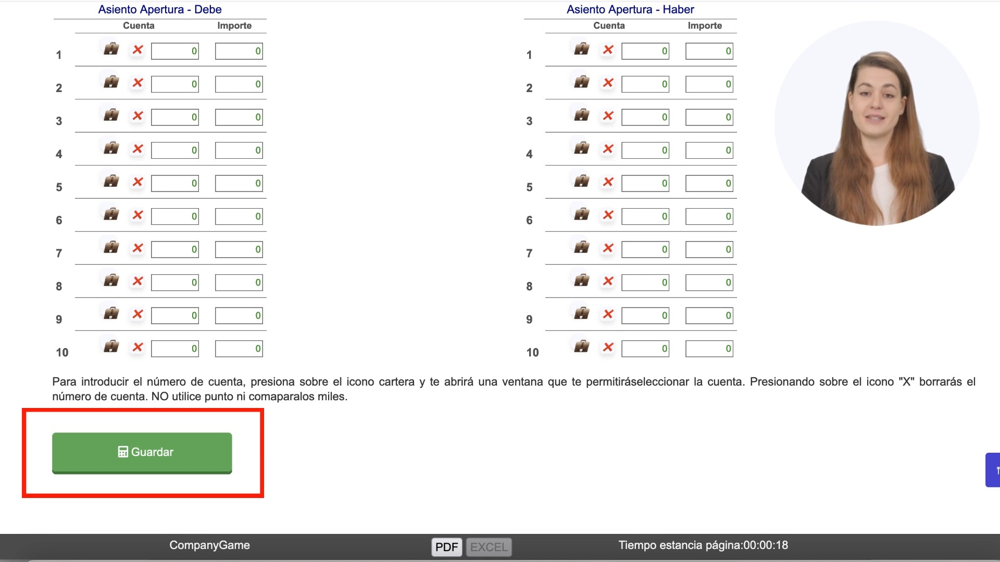
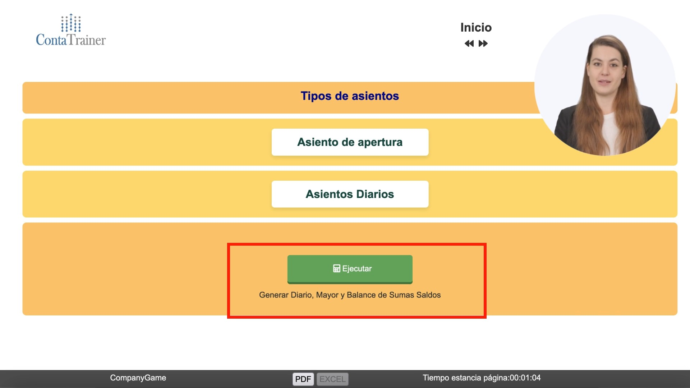
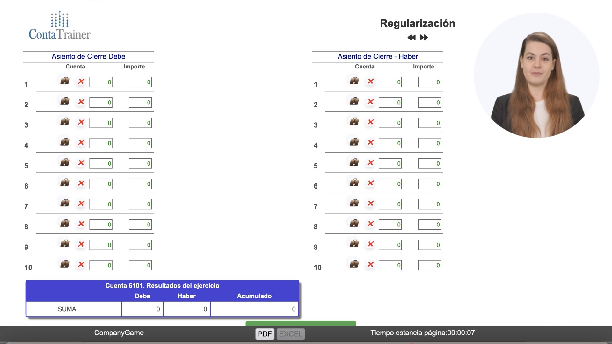
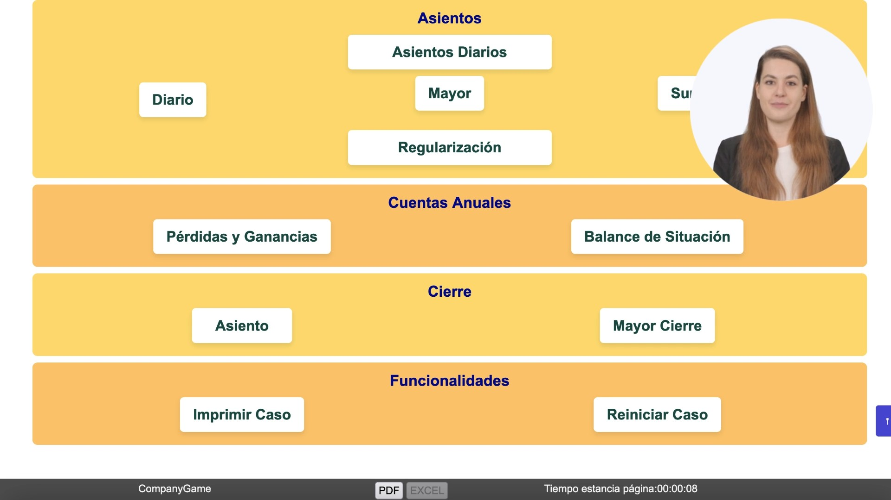

ContaTrainer
Simulador de Iniciación Contable · ContaTrainer I
En ContaTrainer llevas la contabilidad de una empresa durante un ejercicio completo: partes de un balance inicial, registras cada operación con su asiento y llegas hasta el cierre. Con tus asientos, el simulador genera el Diario, los Mayores, el Balance de Sumas y Saldos, la Cuenta de Pérdidas y Ganancias y el Balance de Situación. Así entiendes la contabilidad como lo que es: un sistema de información para tomar decisiones económicas.
🎮 Cartelera de Simuladores
El portafolio CompanyGame y sus avatares de IA
CompanyGame ofrece una amplia gama de simuladores de negocio organizados por nivel de dificultad y área de conocimiento. ContaTrainer se ubica en el área de Contabilidad.

🤖 Avatares de IA — pendiente de archivo
Guarda la imagen de avatares como assets/avatares.png en la carpeta del proyecto y aparecerá aquí automáticamente, con el mismo estilo que la cartelera.
🙌 Ingreso a la Plataforma
Así accedes para empezar a competir
- https://plataforma.companygame.net/
- Usuario y código personal (contraseña)
- Uso 100% en la nube
- Desde cualquier dispositivo y en cualquier lugar
Entorno de Simulación
Conoce la plataforma antes de registrar tu primer asiento
¿Qué es ContaTrainer?
Tu primer entrenamiento en contabilidad, asiento por asiento
El Simulador
Simulador de iniciación contable (Nivel 2) que introduce la normativa contable y la elaboración de la información externa: el Balance de Situación y la Cuenta de Pérdidas y Ganancias.
Tu Misión
Registrar las operaciones de una empresa a lo largo del año y, al cierre del ejercicio, elaborar sus estados financieros a partir de tus propios asientos.
El Escenario
Cada caso arranca con un balance inicial (saldos en el debe y en el haber). Luego, en las siguientes pestañas, se plantean las operaciones del año que debes contabilizar.
La Modalidad
Trabajo individual, de 1 a 2 horas por ejercicio. Está pensado para estudiantes que cursan contabilidad por primera vez.
🎯 Objetivo: comprender la contabilidad como sistema de información para la toma de decisiones económicas y saber elaborar los informes externos al cierre del ejercicio.
🔗 El Ciclo Contable
Del balance de apertura a las cuentas anuales: el recorrido de cada ejercicio
Apertura y asientos
Abres la contabilidad con el asiento de apertura a partir del balance inicial y luego registras, en Asientos Diarios, cada operación del año en el debe y en el haber.
Libros de control
Con el botón Ejecutar, el simulador genera el Diario, el Mayor y el Balance de Sumas y Saldos para que compruebes que todo cuadra.
Regularización
Trasladas los saldos de las cuentas de ingresos y gastos a la cuenta de Resultados del ejercicio para conocer si la empresa ganó o perdió.
Cuentas anuales y cierre
Obtienes la Cuenta de Pérdidas y Ganancias y el Balance de Situación, y terminas con el asiento de cierre y el Mayor de cierre.
🗂️ Organización del Simulador
Un menú, cinco bloques: así está organizado cada caso
Desde el menú principal llegas a todas las pantallas del caso. Conviene recorrerlas de arriba abajo, en el mismo orden del ciclo contable:
| Bloque | Pantallas | ¿Para qué sirve? |
|---|---|---|
| 🏢 Empresa | Descripción · PGC | Leer el enunciado del caso y consultar el plan de cuentas |
| ✍️ Asientos | Asientos Diarios · Diario · Mayor · Sumas y Saldos · Regularización | Registrar las operaciones y comprobar que la contabilidad cuadra |
| 📊 Cuentas Anuales | Pérdidas y Ganancias · Balance de Situación | Ver los estados financieros que resultan de tus asientos |
| 🔒 Cierre | Asiento · Mayor Cierre | Registrar el asiento de cierre y revisar cómo quedan las cuentas |
| 🛠️ Funcionalidades | Imprimir Caso · Reiniciar Caso | Imprimir tu trabajo o empezar el caso desde cero |
Selector de cuentas
Pulsa el icono de la cartera para abrir la ventana del plan de cuentas y elegir la cuenta. Con la X borras la cuenta elegida.
Importes
Escribe los importes sin punto ni coma para separar los miles: 55000, no 55.000.
Guardar
Pulsa Guardar después de completar cada asiento para que el simulador lo tenga en cuenta.
Navegación
Usa las flechas junto al título para pasar de pantalla y el botón PDF de la barra inferior para exportar.
⚙️ Casos Prácticos
Seis bloques de operaciones que aprenderás a contabilizar
Compras y Ventas
Operaciones con mercaderías, efectos comerciales y cobros: el día a día de cualquier empresa.
Acreedores y Deudores
Lo que la empresa debe a terceros y lo que le deben: cómo nace cada deuda o derecho de cobro y cómo se cancela.
Inmovilizado
Valoración y tratamiento contable de los activos fijos: propiedad, planta y equipo, y su depreciación.
Activos y Pasivos Financieros
Inversiones, préstamos y otras operaciones financieras de la empresa.
Ciclo Contable y Resultados
Del registro diario al resultado del ejercicio: cómo cada operación termina afectando la utilidad o la pérdida.
Cierre con Balance
Sumas y saldos, mayores, estado de resultados y balance: el cierre completo del ejercicio.
📚 Contenidos y Objetivos
La teoría que pones en práctica y lo que lograrás al terminar
🧠 Contenido teórico
Conceptos básicos, marco conceptual y documentos contables
Balance de Situación, Cuenta de Pérdidas y Ganancias y masas patrimoniales
Plan de cuentas y registro de asientos contables
🎯 Objetivos de aprendizaje
Comprender la contabilidad como sistema de información para la toma de decisiones económicas
Elaborar los informes externos al cierre del ejercicio
Recorrer todo el ciclo contable: apertura, registro, regularización, cuentas anuales y cierre
📑 Informes Contables
Los cinco informes que nacen de tus asientos y qué revisar en cada uno
ContaTrainer no tiene ranking: aquí no compites con nadie. Lo que cuenta es que tu contabilidad sea correcta, y para comprobarlo tienes cinco informes que el simulador genera a partir de tus asientos. Haz clic en cada uno para ver su detalle:
Descripción: Recoge, en orden cronológico, todos los asientos que registraste: cuentas, importes al debe y al haber, y los totales.
¿Qué revisar? Que cada asiento esté completo y que el Total Debe sea igual al Total Haber.
Descripción: Agrupa los movimientos cuenta por cuenta, con sus sumas al debe y al haber y el saldo acumulado.
¿Qué revisar? Que el saldo de cada cuenta tenga sentido según su naturaleza: por ejemplo, que la caja no quede en negativo.
Descripción: Resume en un solo cuadro las sumas y los saldos de todas las cuentas del Mayor.
¿Qué revisar? Que las sumas deudoras y acreedoras cuadren antes de pasar a la regularización.
Descripción: El estado de resultados: ventas, aprovisionamientos, gastos de personal y de explotación, resultado de explotación, resultado financiero y resultado del ejercicio.
¿Qué revisar? Si la empresa ganó o perdió en el año y qué partidas explican ese resultado.
Descripción: La foto de la empresa al cierre: Activo (no corriente y corriente) frente a Patrimonio Neto y Pasivo (no corriente y corriente).
¿Qué revisar? Que el Total Activo sea igual a Patrimonio Neto + Pasivo.
El Simulador
Conoce la empresa y el plan de cuentas con los que vas a trabajar
🏢 La Empresa
Descripción del caso y plan de cuentas
📄 Descripción

📚 Plan de Cuentas

Actividades del Simulador
Las pantallas donde registras cada ejercicio, paso a paso
🕹️ Actividades del Simulador
Las pantallas donde registras cada ejercicio, en el orden en que las usarás
🧭 Menú principal
Punto de partida de cada caso. Desde aquí entras a la descripción de la empresa, al plan de cuentas (PGC), a los asientos, a las cuentas anuales y al cierre.
Antes de registrar nada, lee la Descripción del caso y ubica el PGC: saber qué cuentas tienes disponibles evita la mayoría de los errores.

📂 Apertura
Presenta el balance con el que empieza el año (saldos en el debe y en el haber) y las tablas del Asiento de Apertura para registrarlo.
Todo el ejercicio parte de aquí: si la apertura no cuadra, ninguno de los informes posteriores cuadrará.

✍️ Registro de asientos
Filas de Debe y Haber para cada asiento. Con el icono de la cartera eliges la cuenta, con la X la borras, y al terminar pulsas Guardar.
Aquí está el corazón del aprendizaje: decidir qué cuenta se carga y cuál se abona en cada operación.

▶️ Ejecutar
Pantalla de tipos de asiento (apertura y diarios) con el botón Ejecutar, que genera el Diario, el Mayor y el Balance de Sumas y Saldos.
Sin ejecutar, los informes no reflejan tus últimos asientos. Ejecuta cada vez que termines un bloque de operaciones y revisa los resultados.

🔄 Regularización
Asiento de cierre de las cuentas de ingresos y gastos, con el resumen de la cuenta 6101 · Resultados del ejercicio.
Es el paso que convierte los movimientos del año en un resultado: utilidad o pérdida del ejercicio.

🔒 Cierre y funcionalidades
Parte final del menú: Asiento y Mayor de cierre, y las funciones Imprimir Caso y Reiniciar Caso.
Con el asiento de cierre dejas las cuentas a cero y terminas el ejercicio. Imprime el caso para tener tu trabajo, o reinícialo si quieres practicar de nuevo.

📚 Métodos de Implementación
Cuatro formas de integrar el simulador en tu programa académico
🔵 Método Deductivo
📋 Características
- Comienzas estudiando el manual y la teoría antes de decidir
- La primera ronda de decisiones ya está fundamentada en los conceptos aprendidos
- Análisis de resultados mediante el Cuadro de Mando
- El simulador demuestra y valida la teoría en la práctica
- Cierre consolidando teoría + evidencia de resultados
🟢 Método Inductivo
📋 Características
- Empiezas a decidir SIN leer el manual (aprendizaje por descubrimiento)
- Consultas el manual tras la primera experiencia para entender resultados
- Análisis de resultados mediante el Cuadro de Mando
- Segunda ronda informada por la teoría
- Cierre con aprendizaje consolidado tras reflexión sobre errores
🔷 Método Mixto
📋 Características
- Alternas bloques de teoría con rondas de decisión
- Cada concepto se aplica de inmediato en el simulador
- Análisis continuo con el Cuadro de Mando entre rondas
- Aprendizaje acumulativo: cada periodo construye sobre el anterior
- Cierre con evidencia del progreso a lo largo del curso
🟣 Métodos Alternos
Autónomo
Autónomo
📋 Características
- Combina sesiones presenciales con trabajo autónomo del equipo
- Disponible en formato semanal o intensivo de fin de semana
- Las decisiones se preparan de forma autónoma entre sesiones
- Máxima flexibilidad de calendario para el grupo
- El facilitador guía solo los puntos de encuentro clave
❓ Preguntas Frecuentes
Las dudas más comunes antes de iniciar la simulación
¡Gracias!
Gracias por participar en ContaTrainer